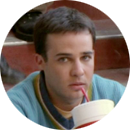
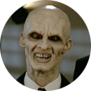

Buffy Body Count
A Nice and Accurate Body Count of Buffy the Vampire Slayer
...



INSTRUCTIONS
Hover over a season/episode number to show the episode name.
The (m) in the legend denotes where Multiple Deaths occurred.
Click a dot to reveal death information in the area above the chart.
The dots with black strokes denote deaths caused by evil factions.
Sources: Watching the entire seven season boxed set and diligently marking down every kill as I saw them.
Design by dave columbus, 2015